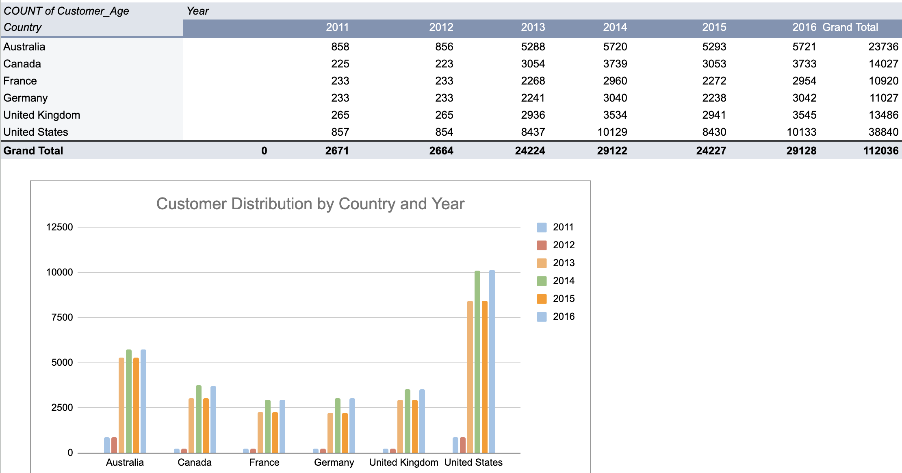

Bike Store Sales Analysis
Project Overview
This project analyzes bike store sales data in Europe using Microsoft Excel. The dataset, sourced from Kaggle, contains valuable information about sales trends, customer purchases, and product performance.
Why Excel?
As a data analyst, I recognize that not everyone is familiar with SQL or coding-based analytics. Many managers, business executives, and non-technical stakeholders prefer tools that allow them to visually interact with data. Excel provides an intuitive interface with pivot tables, charts, and formulas that enable effective data exploration and reporting.
By conducting this analysis in Excel, I ensure that insights can be easily understood, shared, and acted upon by a broad audience.
Key Learnings
Through this project, I:
- Refined Excel skills: Used pivot tables, VLOOKUP, INDEX-MATCH, and data visualization techniques to summarize key trends.
- Identified sales trends: Explored seasonal trends, top-performing products, and customer purchasing behaviors.
- Developed actionable insights: Generated business recommendations based on sales performance and customer segments.
- Improved data storytelling: Created clear and engaging reports that effectively communicate insights to stakeholders.
Results
- Revenues by Year in each country: Analyze revenues trend in Australia, Canada, France, Germany, UK, and US from 2011 to 2016.
-
Customers Distribution in Age Groups: Explored
customers counts in each group.
-
Orders and Profit in each Sub-Category: Compare
whether an increase in orders leads to higher profits for each
category.
-
Customer trend in Country each year: Analyze
numbers of customer in Australia, Canada, France, Germany, UK,
and US from 2011 to 2016.

Tools Used
- Microsoft Excel: Pivot tables, formulas, charts, and conditional formatting.
- Power Query (if applicable): For advanced data transformation and automation.
How the Dashboard Looks

Dataset
The dataset used for this project is the Bike Store Sales Dataset, which can be found on Kaggle:
The dataset includes information such as:
- Customer demographics and purchase history.
- Product categories and sales performance.
- Geographic sales trends and regional performance.
- Order details, including pricing and discounts.
Conclusion
This project demonstrates how Excel can be a powerful tool for sales analysis and decision-making. By making data accessible and visually engaging, businesses can drive more informed strategies without needing technical expertise. The insights gained from this analysis can help bike stores optimize their sales strategies, improve customer satisfaction, and increase profitability.